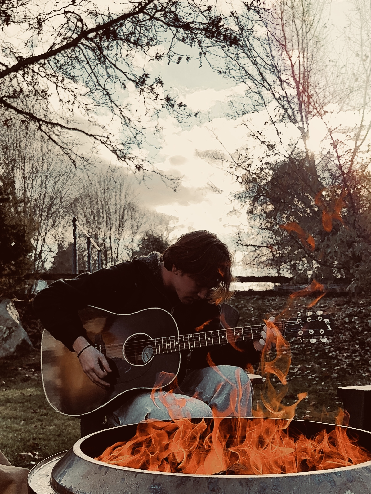

Alternative • Country • Kennebunk, Maine

George Lazos is an alternative country and americana artist from Kennebunk, Maine, blending honest storytelling with a modern, guitar-driven sound.
Inspired by artists like Zach Bryan, Ole 60, and Evan Honer, his music explores themes of self identity, heartache, and nostalgia.
With a style rooted in emotion and stripped-down authenticity, George brings a relatable and heartfelt presence to every performance.
🎤 Available for bookings
📍 Based in Kennebunk, Maine